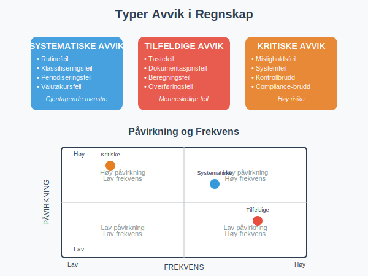
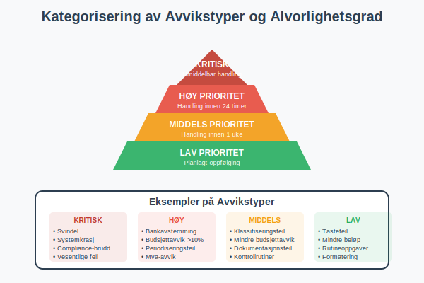
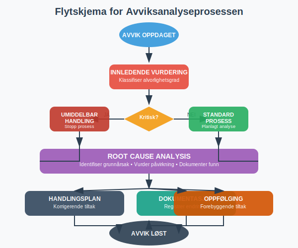
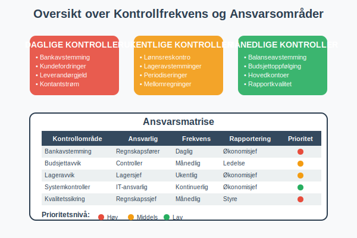
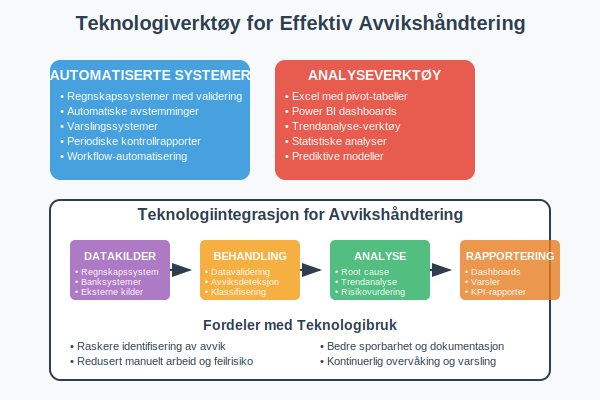
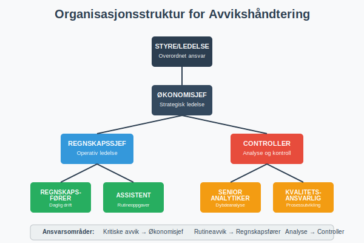
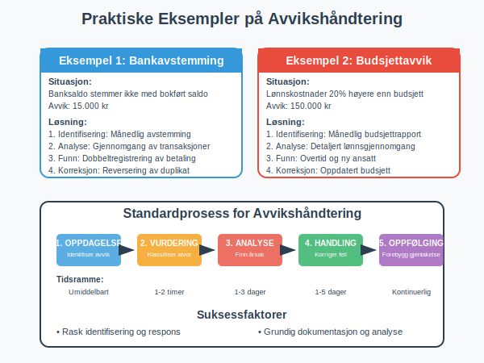
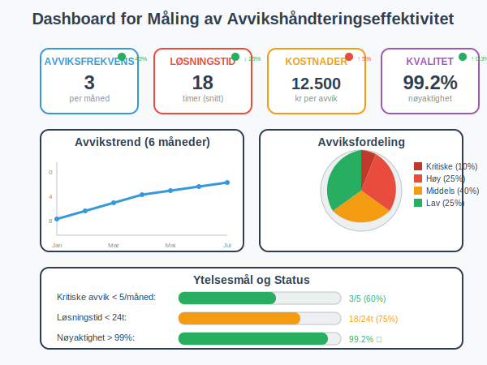
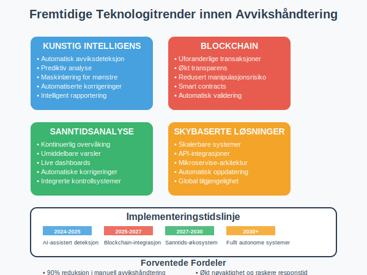

Avvikshåndtering i regnskap er en kritisk prosess som sikrer nøyaktighet og pålitelighet i finansielle rapporter. Det handler om å systematisk identifisere, analysere og korrigere forskjeller mellom forventede og faktiske regnskapstall. En effektiv avvikshåndtering er grunnleggende for god regnskapskontroll og finansiell styring, og utgjør en viktig del av QA (Quality Assurance) i regnskapsföring.

Hva er Avvikshåndtering?
Avvikshåndtering er prosessen med å identifisere, undersøke og korrigere forskjeller mellom:
- Budsjetterte og faktiske tall
- Forventede og registrerte transaksjoner
- Kontrollsummer og detaljerte poster
- Periodiske avstemminger og løpende saldoer
Målet er å sikre at regnskapet gir et rettvisende bilde av selskapets finansielle stilling og resultater.

Typer Avvik i Regnskap
Systematiske Avvik
- Rutinefeil: Feil i standardprosedyrer eller systemer
- Klassifiseringsfeil: Feil kontoføring av transaksjoner
- Periodiseringsfeil: Feil tidspunkt for registrering
- Valutakursfeil: Feil omregning av utenlandsk valuta
Tilfeldige Avvik
- Tastefeil: Menneskelige feil ved registrering
- Dokumentasjonsfeil: Manglende eller feil bilag
- Beregningsfeil: Feil i kalkulasjoner
- Overføringsfeil: Feil ved dataoverføring
Kritiske Avvik
- Misligholdsfeil: Bevisste feilregistreringer
- Systemfeil: Tekniske problemer i regnskapssystem
- Kontrollbrudd: Svikt i interne kontroller
- Compliance-brudd: Brudd på regnskapsregler

Avvikshåndteringsprosessen
1. Identifisering av Avvik
Automatisk identifisering:
- Systemgenererte rapporter og varsler
- Automatiske avstemminger
- Kontrollrutiner i regnskapssystem
- Periodiske balansesjekker
Manuell identifisering:
- Månedlige avstemminger
- Budsjettoppfølging
- Analyse av nøkkeltall
- Revisjon av transaksjoner
2. Klassifisering og Prioritering
| Avvikstype | Prioritet | Tidsramme | Ansvarlig |
|---|---|---|---|
| Kritiske feil | Høy | Umiddelbart | Regnskapssjef |
| Systematiske feil | Middels | 1-3 dager | Regnskapsfører |
| Mindre feil | Lav | 1 uke | Assistent |
| Rutineavvik | Planlagt | Månedlig | Team |
3. Analyse og Utredning
Root Cause Analysis:
- Identifiser grunnårsaken til avviket
- Vurder om det er et enkeltstående tilfelle
- Undersøk om det påvirker andre områder
- Dokumenter funn og konklusjoner
Risikovurdering:
- Vurder påvirkning på finansielle rapporter
- Identifiser potensielle konsekvenser
- Vurder behov for ekstern rapportering
- Prioriter korrigerende tiltak

4. Korrigerende Tiltak
Umiddelbare tiltak:
- Korriger feilregistreringer
- Oppdater berørte kontoer
- Informer relevante parter
- Dokumenter endringer
Forebyggende tiltak:
- Forbedre kontrollrutiner
- Oppdater prosedyrer
- Øk kompetanse
- Implementer nye kontroller
Beste Praksis for Avvikshåndtering
Etabler Klare Rutiner
Daglige kontroller:
- Kontroller bankavstemming
- Verifiser kundefordringer
- Sjekk leverandørgjeld
- Overvåk kontantstrøm
Ukentlige kontroller:
- Gjennomgå lønnsreskontro
- Kontroller lageravstemminger
- Verifiser periodiseringer
- Sjekk mellomregninger
Månedlige kontroller:
- Fullstendig balanseavstemming
- Budsjettoppfølging og analyse
- Gjennomgang av alle hovedkontoer
- Kvalitetssikring av rapporter

Dokumentasjon og Sporbarhet
Avviksdokumentasjon skal inneholde:
- Beskrivelse av avviket
- Oppdagelsesdato og -metode
- Ansvarlig person for oppfølging
- Korrigerende tiltak som er iverksatt
- Oppfølgingsdato og status
- Godkjenning fra overordnet
Sporbarhet:
- Alle endringer må kunne spores tilbake
- Bevare originale dokumenter
- Loggføre alle korrigeringer
- Sikre revisjonsspor i systemet
Teknologi og Verktøy
Regnskapssystemer med Avvikshåndtering
Automatiserte kontroller:
- Innebygde valideringsregler
- Automatisk avstemming av kontoer
- Varsler ved uvanlige transaksjoner
- Periodiske kontrollrapporter
Rapporteringsverktøy:
- Dashboards for avviksovervåking
- Automatiske avviksrapporter
- Trendanalyse og prognoser
- Integrerte kontrollpanel
Excel og Analyseverktøy
Avvikshåndtering i Excel:
- Pivot-tabeller for analyse
- Betingede formateringer for varsler
- Automatiske formler for kontroller
- Makroer for rutineoppgaver

Organisering av Avvikshåndtering
Roller og Ansvar
| Rolle | Ansvar | Kompetansekrav |
|---|---|---|
| Regnskapssjef | Overordnet ansvar, kritiske avvik | Autorisert regnskapsfører |
| Regnskapsfører | Daglig oppfølging, analyse | Fagbrev/høyskole |
| Assistent | Rutinekontroller, registrering | Grunnleggende regnskapskunnskap |
| Controller | Budsjettavvik, analyse | Økonomisk utdanning |
Rapporteringslinjer
Intern rapportering:
- Daglige statusrapporter til regnskapssjef
- Ukentlige sammendrag til ledelsen
- Månedlige avviksrapporter til styre
- Kvartalsvise trendanalyser
Ekstern rapportering:
- Revisor ved vesentlige avvik
- Skattemyndigheter ved skattemessige feil
- Finanstilsyn ved børsnoterte selskaper
- Kreditorer ved vesentlige endringer

Praktiske Eksempler
Eksempel 1: Bankavstemming
Situasjon: Banksaldo stemmer ikke med bokført saldo
Avvikshåndtering:
- Identifisering: Månedlig bankavstemming viser avvik på 15.000 kr
- Analyse: Gjennomgang av banktransaksjoner og bokføringer
- Funn: Dobbeltregistrering av leverandørbetaling
- Korreksjon: Reversering av duplikat og oppdatering av leverandørgjeld
- Oppfølging: Forbedret rutine for betalingsregistrering
Eksempel 2: Budsjettavvik
Situasjon: Lønnskostnader 20% høyere enn budsjett
Avvikshåndtering:
- Identifisering: Månedlig budsjettrapport viser betydelig avvik
- Analyse: Detaljert gjennomgang av lønnsutbetalinger
- Funn: Overtidskostnader ikke budsjettert, ny ansatt startet tidligere
- Korreksjon: Oppdatert budsjett og forbedret prognoser
- Oppfølging: Månedlig oppfølging av lønnsbudsjett

Utfordringer og Løsninger
Vanlige Utfordringer
Ressursmangel:
- For lite tid til grundige kontroller
- Mangel på kompetent personale
- Begrenset tilgang til verktøy
Systemutfordringer:
- Manglende integrasjon mellom systemer
- Utilstrekkelige kontrollrutiner
- Komplekse rapporteringsstrukturer
Organisatoriske utfordringer:
- Uklare ansvarsforhold
- Mangelfull kommunikasjon
- Motstand mot endringer
Løsningsstrategier
Effektivisering:
- Automatiser rutinekontroller
- Implementer unntak-basert rapportering
- Bruk teknologi for å redusere manuelt arbeid
Kompetansebygging:
- Regelmessig opplæring av personale
- Sertifisering innen regnskapsføring
- Deling av beste praksis
Prosessforbedring:
- Kontinuerlig evaluering av rutiner
- Implementering av lean-prinsipper
- Regelmessig oppdatering av prosedyrer
Måling av Effektivitet
Nøkkelindikatorer (KPIer)
| Indikator | Måleenhet | Målsetting |
|---|---|---|
| Avviksfrekvens | Antall per måned | < 5 kritiske avvik |
| Løsningstid | Timer/dager | < 24 timer for kritiske |
| Kostnader | Kr per avvik | Reduksjon 10% årlig |
| Kvalitet | % korrekte rapporter | > 99% nøyaktighet |
Kontinuerlig Forbedring
Månedlig evaluering:
- Gjennomgang av avviksstatistikk
- Identifisering av trender
- Vurdering av prosesseffektivitet
- Planlegging av forbedringstiltak
Årlig gjennomgang:
- Helhetlig evaluering av avvikshåndtering
- Oppdatering av rutiner og prosedyrer
- Kompetansevurdering av personale
- Investering i nye verktøy og systemer

Juridiske og Regulatoriske Aspekter
Regnskapsloven
Krav til avvikshåndtering:
- Regnskapet skal gi et rettvisende bilde
- Alle vesentlige feil må korrigeres
- Dokumentasjon av endringer må oppbevares
- Revisor må informeres om vesentlige avvik
Skattemessige Konsekvenser
Korrigeringer som påvirker skatt:
- Endringer i resultatregnskapet kan påvirke skattegrunnlag
- Fristoverskridelser kan medføre tilleggsskatt
- Dokumentasjon må kunne fremlegges ved kontroll
- Frivillige rettelser kan redusere sanksjoner
Internkontroll
Krav til internkontroll:
- Etablere tilstrekkelige kontrollrutiner
- Sikre kompetent personale
- Dokumentere prosesser og prosedyrer
- Regelmessig evaluering av kontrolleffektivitet
Fremtidige Trender
Digitalisering og Automatisering
Kunstig intelligens:
- Automatisk identifisering av avviksmønstre
- Prediktiv analyse for forebygging
- Maskinlæring for forbedret nøyaktighet
- Automatiserte korrigeringsforslag
Blockchain-teknologi:
- Uforanderlige transaksjonslogger
- Økt transparens og sporbarhet
- Redusert risiko for manipulasjon
- Automatiserte smart contracts
Sanntidsrapportering
Kontinuerlig overvåking:
- Sanntids dashboards
- Umiddelbare varsler ved avvik
- Automatiske korrigeringer
- Integrerte kontrollsystemer

Konklusjon
Effektiv avvikshåndtering er avgjørende for å opprettholde høy kvalitet i regnskapsføringen. Ved å implementere systematiske prosesser, bruke riktige verktøy og sikre kompetent personale, kan organisasjoner:
- Redusere risiko for feil i finansielle rapporter
- Forbedre effektivitet i regnskapsprosessene
- Øke tilliten til finansiell informasjon
- Sikre compliance med lover og forskrifter
En proaktiv tilnærming til avvikshåndtering, kombinert med kontinuerlig forbedring og teknologisk utvikling, vil være nøkkelen til suksess i fremtidens regnskapsføring.
Viktige takeaways:
- Etabler klare rutiner og ansvarsforhold
- Invester i riktige verktøy og teknologi
- Fokuser på kompetansebygging
- Mål og følg opp effektivitet kontinuerlig
- Tilpass prosessene til organisasjonens behov
For mer informasjon om relaterte emner, se våre artikler om regnskap, internkontroll, og regnskapsføring.